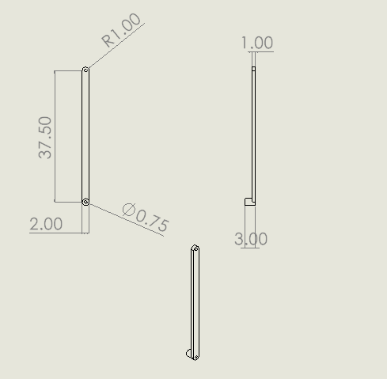

Beach Cleanup Robot: Scoop Lift Arm
Sheet
01 of 08
- Dates
- Sep 2026 – present (in progress)
- Context
- Mechanical Engineering Design (ME 4550), group design project
- Role
- In charge of all of the arm's analysis so far, including the bending, shear, and torsion calculations (team of five)
- Tools
- hand calculations (stress, and fatigue with modified Goodman) · material selection · SolidWorks (3D model and 2D drawing)
Status as of
- 1 Ideation completed
- 2 First analysis and markup completed
- 3 First presentation completed
- 4 Second analysis completed
- 5 Second presentation In progress
- 6 Additional analysis not started
- 7 Final presentation not started
- 8 Final analysis, machine-ready parts and build not started
Sized the cantilevered lift arm of a beach-cleaning robot's scoop against six load cases, including a worst-case rock strike, and chose its material for salt-air service.
Key numbers
- Lift arm (cantilever)
- 37.5 in
- Load cases analyzed
- 6
- Worst-case rock strike
- 500 lbf
- Yield safety factor (2.0 required)
- 2.49
- Fatigue safety factor, lift-and-dump
- 1.63



Objective and constraints
- The Beach Bot is our group's affordable, easy-to-use robot for cleaning trash in and on beach sand.
- The scoop's lift arm is a 37.5 in cantilever that has to carry scoop loads and survive impacts.
- Requirement: yield safety factor of at least 2.0.
- The arm works in salt air, so corrosion and weight both matter.
What I did
- Analyzed the arm across 6 load cases with free-body, shear, and bending-moment diagrams.
- Designed for a 500 lbf worst-case rock strike (250 lbf per arm).
- Sized a 2.00 × 1.00 in 6061-T6 aluminum section to a yield safety factor of 2.49 (2.0 required) and a fatigue safety factor of 1.63 for lift-and-dump using modified Goodman.
- Compared 6061-T6 with 5052 aluminum, 7075 aluminum, 316 stainless steel, and A36 steel, and chose 6061-T6 for strength-to-weight and salt-air corrosion resistance.
Result
A 2.00 × 1.00 in 6061-T6 arm that meets the 2.0 yield target (2.49) and holds up in fatigue (1.63 for lift-and-dump). The strike torque is too much for the shaft and gearbox, so the team adopted a frame down-stop.